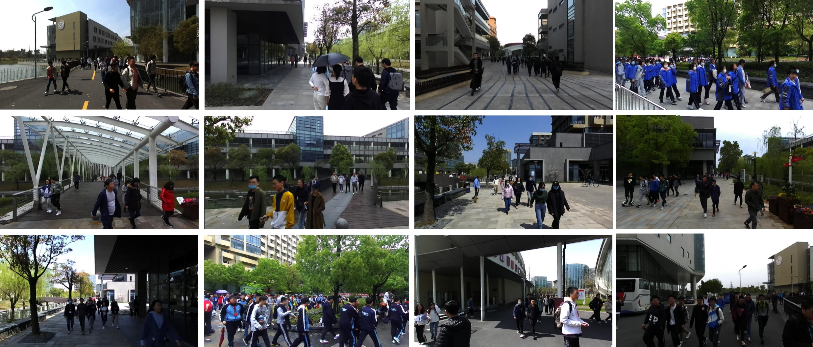

STCrowd is collected by a 128-beam LiDAR and a monocular camera, which are synchronized and mounted at a fixed position on the vehicle. The detailed set-up of the sensors is shown in the supplementary materials. The annotated dataset is comprised of 84 sequences and the total number of frames is 10, 891. Each sequence contains a variable number of continuously recorded frames, ranging from 50 to 800. There are 219 K and 158 K instance-level bounding box annotations in point clouds and images, respectively. Joint annotations of point clouds and images in sequences are also provided. In particular, we get official permission for collecting the data and we protect personal privacy by blurring faces shown in images.
The vehicle is equipped with following sensors: Zed Sterelab2 stereo camera: 15Hz frame rate, 1280 x 720 resolution and 60 field-of-view(FOV) for left and right, 70 FOV for center.
OS0 3D LiDAR with 128 beams: 10Hz frame rate, Azimuthal FOV 360, Vertical FOV 90(±45), Vertical resolution 0.7.
To achieve good cross-modal data alignment between different sensors, the timestamp of the LiDAR is the time when the full rotation of current frame is achieved and the correspond of timestamps for different devices is achieved by special posture when recording data. We keep the common frequency as 5 Hz and annotate the frames per 0.4 second.(The raw data extracted the timestamp information directly from ros, so the image timestamp and liDAR would be different in name due to ROS delay, but we took this delay into account in synchronization to complete the corresponding (corresponding in JSON file).)
We collect data in different scenes and weather conditions. Our scenes include rich background with bridges, trees, buildings and designed architectures. Unlike traffic scenes in which pedestrians gather around junctions or roadsides, the distribution of pedestrians in our scenes is more diverse. The weather also varies to include clear, cloudy and rainy days. Different lighting conditions will influence the color information of the image, and the rainy or wet conditions will affect the reflection from the LiDAR sensor, resulting in fewer points on objects and the background.
The original annotation result is saved in 'SEQUENCE_NUM.json' for each continuous sequence,
We provide high-quality manually labeled ground truth for both LiDAR point clouds and images. For
annotations in point clouds, we labeled each pedestrian using a 3D bounding box ,
where
denotes the center coordinates and
are the length, width, and height along the
x-axis,y-axis and z-axis, respectively. Pedestrians with fewer than 15 points in the LiDAR point cloud
are not annotated. For annotations of images, besides 3D bounding box, we also label the 2D bounding box
with
for general 2D detection and tracking. For
the objects captured by both the camera and
LiDAR, we annotate the joint ID in sequences, which facilitates tracking and sensor-fusion tasks. The
frequency of our annotation is 2.5HZ. We also provide annotations for the level of density and
occlusion(more details in paper). Since the 3D bounding boxes in images are not directly derived from LiDAR point cloud, all
objects have their own annotations but may lack corresponding information in point cloud/images. For
tracking task, each sequence group has a variable number of continuously recorded frames with the group
id, ranging from 50 to 800 (which is from 20s to 320s), the same object appear in continuous frame has
consistent.
Humans with fewer than 15 points are not annotated and the point cloud annotation is conducted within the range of 35 meters. With the straight front of the camera as the reference direction, only the left and right 90° are labeled, result in the point cloud data within the range of 180° are labeled.
For more details, we include in sample.json.
The total sequence number is 84 and we provide for each scan XXXX.XXXX.bin of the sequence folder in pcd folder of the original point cloud data which has shape of (N,4) with (x,y,z,reflection), and corresponding XXXX.XXXX.jpg in the left folder and right folder. Each name represents the corresponding timestamp(The raw data extracted the timestamp information directly from ros, so the image timestamp and liDAR may be different in name due to ROS delay, but we took this delay into account in synchronization to complete the corresponding (corresponding in JSON file). XX.json in anno folder contains for each sequence in dictionary format. More details in anno folder are introduced in Data Annotation and sample.json.
Our split for train,validation,test dataset is in split.json. (test annotation is not included in anno file).
We further provide the STCrowd_infos_train.pkl and STCrowd_infos_val.pkl generated by STCrowd_convert file that contains the point cloud, with corresponding image and annotation information for consist format for dataset loader. The convert code and instruction is in STCrowd git repository.